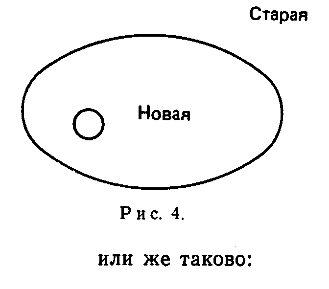

15. Наука versus рационализмИ наконец, гл. 6—18 показывают, что попперовский вариант миллевского плюрализма не согласуется с научной практикой и разрушает известную нам науку. Но если наука существует, разум не может быть универсальным и неразумность исключить невозможно. Эта характерная черта науки и требует анархистской эпистемологии. Осознание того, что наука не священна и что спор между наукой и мифом не принес победы ни одной из сторон, только усиливает позиции анархизма
Несоизмеримость, которую я буду обсуждать в дальнейшем, тесно связана с вопросом о рациональности науки. Действительно, одно из наиболее общих возражений не только против использования несоизмеримых теорий, но даже против идеи существования таких теорий в истории науки, заключается в опасении, что они сильно ограничили бы действие традиционного, не диалектического рассуждения. Поэтому посмотрим несколько более внимательно на критические стандарты, которые, согласно мнению некоторых, образуют содержание “рационального” рассуждения. В частности, посмотрим на стандарты попперианской школы, которой мы и будем здесь главным образом заниматься. Это подведет нас к заключительному шагу нашего анализа столкновения между методологическими концепциями, опирающимися на закон и порядок, и анархизмом в науке. Критический рационализм, представляющий собой наиболее либеральную позитивистскую методологию, существующую в наши дни, либо на самом деле выражает некоторую осмысленную идею, либо является простой совокупностью лозунгов (таких, как “истина”, “профессиональная добросовестность”, “интеллектуальная честность” и т. п.), предназначенных для запугивания боязливых оппонентов (ибо у кого хватит духа сказать во всеуслышание, что “истина” может быть несущественной или даже нежелательной?). В первом случае мы должны иметь возможность сформулировать правила, стандарты, ограничения, позволяющие нам отделить критическое поведение (мышление, пение, написание пьес) от других типов поведения, с тем чтобы открыть иррациональные действия и исправить их с помощью конкретных рекомендаций. Нетрудно сформулировать стандарты рациональности, защищаемые попперианской школой. Эти стандарты являются стандартами критики: рациональное обсуждение состоит в попытках критиковать, а не в попытках доказывать или делать вероятным каждый шаг, который защищает некоторую концепцию от критики и пытается спасти или “обосновать” ее, есть шаг в сторону от рациональности. Каждый шаг, делающий ее более уязвимой, приветствуется. Кроме того, рекомендуется не принимать идей, обнаруживших свои недостатки, и запрещается сохранять эти идеи перед лицом строгой и успешной критики, если нельзя предъявить подходящих контраргументов. Развивайте ваши идеи так, чтобы их можно было критиковать; безжалостно атакуйте ваши идеи, пытаясь не защищать их, а выявлять их слабые места; устраняйте их тотчас же, как только эти слабые места выявились, — таковы некоторые правила, устанавливаемые нашими критическими рационалистами. Эти правила становятся более определенными и конкретными, когда мы обращаемся к философии науки, и в частности к философии естественных наук. В естествознании критика связана с экспериментом и наблюдением. Содержание теории состоит из совокупности тех базисных утверждений, которые ей противоречат, это класс ее потенциальных фальсификаторов. Возрастание содержания означает возрастание уязвимости, поэтому теории с большим содержанием предпочтительнее теорий с меньшим содержанием. Возрастание содержания приветствуется, уменьшение содержания нежелательно. Теория, противоречащая признанному базисному предложению, должна быть устранена. Гипотезы ad hoc запрещаются, и т. д. и т. п. Наука, принимающая правила критического эмпиризма этого рода, будет развиваться следующим образом. Мы начинаем с проблемы, например с проблемы движения планет во времена Платона. Эта проблема (которая ниже будет рассматриваться в несколько идеализированном виде) является не только результатом нашей любознательности, но и теоретическим результатом. Она возникает вследствие того, что определенные ожидания не оправдываются: с одной стороны, представляется очевидным, что звезды должны быть божествами, поэтому от них ожидают, чтобы они вели себя закономерным образом. С другой стороны, в их движении нельзя найти какой-либо легко различимой регулярности. Какие бы намерения и цели им ни приписывали, планеты движутся совершенно хаотически. Как этот факт можно согласовать с ожиданиями и принципами, лежащими в основе этих ожиданий? Свидетельствует ли он о том, что наши ожидания ошибочны? Или мы ошибаемся в своем анализе фактов? В этом и состоит проблема. Важно заметить, что элементы проблемы не просто даны. Например, “факт” иррегулярности нельзя получить без значительных хлопот. Его не может открыть всякий, у кого хорошие глаза и нормальное мышление. Лишь благодаря определенному ожиданию он становится объектом нашего внимания или, выражаясь более точно, факт нерегулярности существует только благодаря ожиданию регулярности. В конце концов, термин “нерегулярность” имеет смысл лишь в том случае, если у нас есть правило. В данном случае правило (которое является особой частью нашего ожидания) утверждает круговое движение с постоянной угловой скоростью. Неподвижные звезды следуют этому правилу, и оно верно для движения Солнца, если мы отметим его путь по отношению к неподвижным звездам. Планеты же не подчиняются этому правилу — ни прямо, относительно Земли, ни косвенно, относительно неподвижных звезд. (В проблеме, которую мы сейчас обсуждаем, правило сформулировано в явном виде и его можно обсуждать. Это бывает не всегда. Осознание некоторого цвета как красного оказывается возможным благодаря глубоко скрытым допущениям относительно структуры нашего окружения, и этого осознания не происходит, когда данные допущения не применяются.) Суммируем эту часть попперианской доктрины: исследование начинается с проблемы. Проблема есть результат столкновения между ожиданием и наблюдением, которое в свою очередь сформировано ожиданием. Понятно, что это учение отличается от индуктивизма, в котором объективные факты входят в пассивное мышление и оставляют в нем свои следы. Оно было подготовлено Кантом, Пуанкаре, Динглером и Миллем. («О свободе»). Формулирование проблемы требует ее решения. Решение проблемы означает изобретение теории, которая релевантна, фальсифицируема (в большей степени, чем любая из ее альтернатив), но еще не фальсифицирована. В упомянутом выше случае (движение планет во времена Платона) проблема стояла так: найти круговые движения с постоянной угловой скоростью, с тем чтобы спасти планетарные феномены. Эта проблема была решена Евдоксом и Гераклидом Понтийским. Затем начинается критика теории, выдвинутой при попытке решить проблему. Успешная критика раз и навсегда устраняет теорию и создает новую проблему, а именно: а) требуется объяснить, почему теория до сих пор была успешной и б) почему она оказалась несостоятельной. Для решения этой проблемы нам нужна новая теория, которая воспроизводит успешные следствия старой теории, отвергает ее ошибки и делает дополнительные предсказания, которых раньше не было. Таковы некоторые формальные условия, которым должна удовлетворять приемлемая наследница опровергнутой теории. Приняв эти условия, можно продвигаться вперед посредством предположений и опровержений от менее общих к более общим теориям и расширять содержание человеческого познания. Открывается (или строится с помощью ожиданий) все больше и больше фактов, которые затем объясняются теориями. Нет гарантий, что человек решит каждую проблему и заменит каждую опровергнутую теорию новой, удовлетворяющей данным формальным условиям. Изобретение теорий зависит от наших способностей и других счастливых обстоятельств, таких, например, как удовлетворительная сексуальная жизнь. Однако до тех пор, пока эти способности сохраняются, предложенная схема дает корректное понимание роста знания, удовлетворяющее требованиям критического рационализма. Здесь можно поставить два вопроса: 1. Желательно ли жить в соответствии с правилами критического рационализма? 2. Возможно ли иметь известную нам науку и одновременно придерживаться этих правил? Для меня первый вопрос представляется гораздо более важным, чем второй. Истина, наука и прочие стеснительные и узколобые установления играют важную роль в нашей культуре и находятся в центре внимания многих философов (большинство философов является оппортунистами). Идеи попперианской школы были получены посредством обобщения решений методологических и эпистемологических проблем. Критический рационализм, возникший при попытке решить проблему Юма и понять эйнштейновскую революцию, затем был распространен на политику и даже на частную жизнь. (Поэтому Хабермас и другие имели основания называть Поппера позитивистом.) Такая процедура может удовлетворить лишь философа-доктринера, который смотрит на жизнь сквозь очки своих собственных технических проблем и признает любовь, ненависть, счастье только в той степени, в которой они встречаются в этих проблемах. Если же мы рассматриваем интересы человека, и прежде всего вопрос о его свободе (свободе от голода, огорчений, от тирании деспотичных систем мышления, a не академическую “свободу воли”), то подобный способ действий оказывается самым худшим.
Можем ли мы исключить возможность того, что известная ныне наука, или “поиск истины” в стиле традиционной философии, превратит человека в монстра? Можно ли исключить возможность того, что это будет ущербный человек, превращенный в убогий, угрюмый, самонадеянный механизм, лишенный обаяния и чувства юмора? “Можно ли исключить возможность того, — спрашивает Кьеркегор, — что моя деятельность как объективного [или рационально-критического] наблюдателя природы ослабляет мою человеческую сущность?”[1] Я полагаю, что ответ на все эти вопросы должен быть отрицательным, и уверен в том, что реформа наук, которая сделает их более анархистскими и более субъективными (в смысле Кьеркегора), крайне необходима. Однако я намерен обсуждать другие проблемы. В данном сочинении я ограничусь вторым вопросом и еще раз повторяю: можно ли иметь известную нам науку и одновременно придерживаться правил критического рационализма, описанных выше? И на этот вопрос можно твердо и решительно ответить “нет”. Во-первых, мы видели, что реальное развитие учреждений, идей, практических действий и т. д. часто начинается не с проблемы, а с некоторой несущественной активности, например с игры, приводящей в качестве побочного эффекта к разработкам, которые впоследствии могут быть интерпретированы как решения неосознанных проблем[2]. Нужно ли исключать такие разработки? И если мы исключим их, то не повлечет ли это серьезного уменьшения числа наших приспособительных реакций и ухудшения качества нашего процесса познания? Во-вторых, как мы видели в гл. 8—12, строгий принцип фальсификации, или “наивный фальсификационизм”, как называет его Лакатос[3], уничтожил бы известную нам науку и никогда не позволил бы ей начаться. Требование роста содержания также невыполнимо. Теории, вызывающие ниспровержение всеобъемлющей и хорошо обоснованной концепции и впоследствии занимающие ее место, первоначально ограничены весьма узкой областью фактов, некоторой совокупностью парадигмальных феноменов, которые поддерживают их, и весьма медленно распространяются на другие сферы. Это можно видеть на примерах из истории (гл. 8 и 9, прим. 1 к гл. 9), и это вполне естественно по общим основаниям: пытаясь развить новую теорию, мы должны сначала сделать шаг назад от имеющихся данных и исследовать проблему наблюдения (об этом шла речь в гл. 12). Конечно, позднее теория распространяется на другие области, однако способ этого распространения редко детерминируется элементами, образующими содержание предшествующих теорий. Постепенно возникающий концептуальный аппарат теории начинает определять ее собственные проблемы, а прежние проблемы, факты и наблюдения либо оказываются забытыми, либо отстраняются как несущественные (см. два примера в прим. 1 к гл. 9 и конец следующей главы). Это совершенно естественное и бесспорное развитие. Почему, в самом деле, некоторая идеология должна ограничиваться старыми проблемами, которые имеют смысл только в рамках отброшенного контекста и которые теперь кажутся глупыми и неестественными? Почему она должна рассматривать “факты”, которые привели к этим проблемам или играли роль в их решении? Почему бы ей не следовать своим собственным путем, изобретая свои собственные задачи и образуя свою собственную область “фактов”? В конце концов, предполагается, что универсальная теория должна иметь некоторую онтологию, которая детерминирует, что именно существует, и таким образом устанавливает область возможных фактов и сферу возможных вопросов. Развитие науки согласуется с этими рассуждениями. Новые концепции сразу устремляются по новым направлениям и с подозрением относятся к старым проблемам (что это за опора, на которой покоится Земля? что это за специфический вес флогистона? что такое абсолютная скорость Земли?) и к старым фактам (большая часть фактов, описанных в «Молоте ведьм», Malleus Maleficarum, — прим. 1 к гл. 9; факты знахарства — прим. 8 к гл. 4; свойства флогистона или свойства эфира), которые так сильно занимали умы более ранних мыслителей. А там, где новые теории уделяют внимание предшествующим, они пытаются истолковать их фактуальное содержание описанным выше способом: с помощью гипотез ad hoc, аппроксимаций ad hoc, переопределения терминов или простого утверждения, что это содержание “следует из” новых фундаментальных принципов[4]. Они “присоединяются к более старым программам, с которыми они явно несовместимы”[5]. Результатом всех этих процедур оказывается интересная эпистемологическая иллюзия: воображаемое содержание более ранних теорий (которое представляет собой пересечение сохраняемых в памяти следствий этих теорий с заново осознанной областью проблем и фактов) сокращается и может уменьшиться до такой степени, что становится меньше воображаемого содержания новых идеологий (которое образуется из реальных следствий этих идеологий плюс все те “факты”, законы, принципы, которые привязаны к ним посредством гипотез ad hoc, аппроксимаций ad hoc или просто благодаря утверждению некоторого влиятельного физика или философа науки и которые, собственно говоря, принадлежат предшествующим идеологиям). Таким образом, при сравнении старой теории с новой кажется, что отношение их эмпирических содержаний таково:

В то время как на самом деле это отношение скорее будет таким:
Здесь область D представляет проблемы и факты старой теории, о которых все еще помнят и которые искажены так, чтобы их можно было включить в новую структуру. В этом и состоит та иллюзия, которая ответственна за постоянное возрождение требования увеличивать содержание[6]. И наконец, теперь мы совершенно отчетливо понимаем необходимость использования гипотез ad hoc: гипотезы ad hoc и аппроксимации ad hoc создают временную сферу контакта между “фактами” и теми частями новой концепции, которые кажутся способными объяснить их в будущем, по истечении некоторого времени и после добавления некоторого дополнительного материала. Они уточняют возможные экспланансы и экспланандумы и благодаря этому детерминируют направление будущих исследований. Они могут сохраниться навсегда, если новая структура остается отчасти незавершенной (что и произошло с квантовой теорией, которой были нужны классические понятия для того, чтобы стать полной теорией)[7]. Или же они включаются в новую теорию в качестве теорем, приводящих к переопределению базисных терминов предшествующей идеологии (это произошло с Галилеем и теорией относительности). Требование, гласящее, что истинное содержание предшествующей теории — такое, каким оно было в период ее господства, — должно включаться в истинное содержание последующей теории, в каждом из указанных случаев нарушалось. Суммируем. Куда ни посмотришь, какой пример ни возьмешь, видишь только одно: принципы критического рационализма (относиться к фальсификациям серьезно; требовать роста содержания, избегать гипотез ad hoc; “быть честным”, что бы это ни означало, и т. п.) и, соответственно, принципы логического эмпиризма (быть точным; основывать наши теории на измерениях; избегать неопределенных и неустойчивых идей и т. п.) дают неадекватное понимание прошлого развития науки и создают препятствия для ее развития в будущем. Они дают неадекватное понимание науки потому, что наука является гораздо более “расплывчатой” и “иррациональной”, чем ее методологические изображения. И они служат препятствием для ее развития, поскольку, как мы видели, попытка сделать науку более “рациональной” и более точной уничтожает ее. Следовательно, различие между наукой и методологией, являющееся очевидным фактом истории, указывает на слабость последней, а также, быть может, на слабость “законов разума”. То, что в сравнении с такими законами представляется как “расплывчатость”, “хаотичность” или “оппортунизм”, играло очень важную роль в разработке тех самых теорий, которые сегодня считаются существенными частями нашего познания природы. Эти “отклонения” и “ошибки” являются предпосылками прогресса. Они позволяют выжить в сложном и трудном мире, в котором мы обитаем; они позволяют нам оставаться свободными и счастливыми деятелями. Без “хаоса” нет познания. Без частого отказа от разума нет прогресса. Идеи, образующие ныне подлинный базис науки, существуют только потому, что живут еще предрассудки, самонадеянность, страсть — именно они противостоят разуму и по мере возможности проявляются. Отсюда мы должны заключить, что даже в науке разум не может и не должен быть всевластным и должен подчас оттесняться или устраняться в пользу других побуждений. Нет ни одного правила, сохраняющего свое значение при всех обстоятельствах, и ни одного побуждения, к которому можно апеллировать всегда. Теперь мы должны вспомнить, что этот вывод был получен при условии, что наука, которую мы знаем сегодня, остается неизменной и что используемые ею процедуры детерминируют также и ее будущее развитие. Если наука дана, то разум не может быть универсальным и неразумность не может быть исключена. Эта характерная особенность науки является серьезным свидетельством в пользу анархистской эпистемологии. Однако и наука не священна. Ограничения, которые она налагает (а таких ограничений много, хотя их не всегда легко сформулировать), вовсе не являются необходимыми для создания стройных и плодотворных концепций относительно мира. Существуют мифы, существуют догмы теологии, существуют метафизические системы и множество иных способов построения мировоззрения. Ясно, что плодотворный обмен между наукой и такими “ненаучными” мировоззрениями нуждается в анархизме даже в большей мере, чем сама наука. Таким образом, анархизм не только возможен, но и необходим как для внутреннего прогресса науки, так и для развития культуры в целом. В конце концов, именно Разум включает в себя такие абстрактные чудовища, как Обязанность, Долг, Мораль, Истина и их более конкретных предшественников, богов, которые использовались для запугивания человека и ограничения его свободного и счастливого развития. Так будь же он проклят!..
[1] Кьеркегор С. (Papier. VII, pt. I, sec. A, № 182). Милль пытается показать, каким образом научный метод можно истолковать как составную часть теории человека и тем самым дает утвердительный ответ на вопрос Кьеркегора; см. прим. 2 к гл. 4. [2] Краткие замечания об отношении между идеей и действием см. в гл. 1. Подробности см. в прим. 31 и сл. к моей работе [127]. [3] Лакатос К. [243]. (“Наивный фальсификационизм” здесь называется также “догматическим”.) [4] “Теория Эйнштейна лучше... теории Ньютона в 1916 году..., поскольку она объясняет все, что успешно объясняла теория Ньютона...” (Лакатос [243], с. 124). [5] Лакатос при обсуждении деятельности Коперника и Бора [243], с. 143. [6] Эта иллюзия обнаруживается даже в превосходной статье Э. Захара о развитии физики от Лоренца до Эйнштейна. Согласно Захару, Эйнштейн превзошел Лоренца в объяснении смещения перигелия Меркурия (1915 г.). Однако в 1915 г. еще никому не удалось дать релятивистского истолкования классической теории возмущений с той степенью точности, которая была достигнута Лапласом и Пуанкаре, и следствия концепции Лоренца на атомном уровне (электронная теория Металлов) также не получили объяснения и были просто постепенно заменены квантовой теорией. Таким образом, Лоренц был “превзойден” не одной, а по крайней мере двумя различными и взаимонесоизмеримыми программами. В своей блестящей реконструкции развития исследовательской программы Коперника от «Малого комментария» к труду «О вращениях...» Лакатос отмечает прогрессивные изменения, что объясняется просто тем, что он не рассматривает проблем динамики и оптики и говорит лишь о простой и бедной кинематики. Неудивительно поэтому, что Захар и Лакатос полагают, что условие роста содержания все-таки выполняется. См. также мою небольшую заметку «Захар об Эйнштейне» в [132]. [7] См. мою работу [123], ч. II, разд. 9 и 10.
|